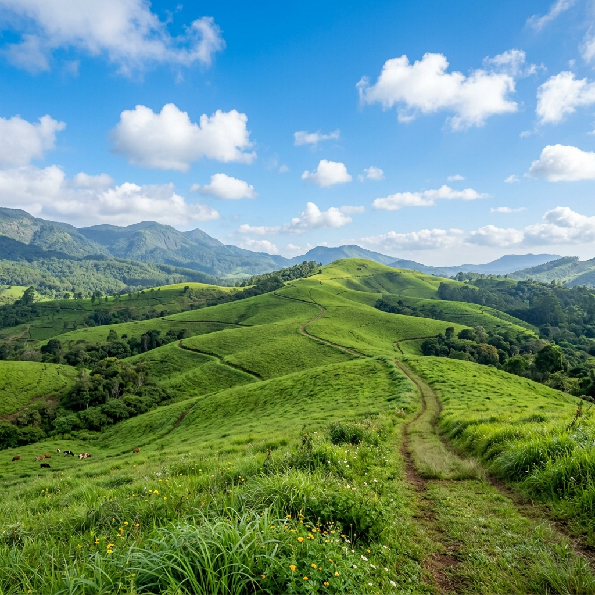

Explore Teekoy
Top attractions in and around Teekoy. Discover the hidden gems, agrarian legacy, and rich culture of this highland village.
About Teekoy: The Highland Jewel of Kottayam
Welcome to Teekoy, a captivating highland village where the lush midland plains of Kerala seamlessly transition into the rugged, mist-clad peaks of the Western Ghats. Situated in the eastern hinterlands of the Kottayam district, Teekoy is a land defined by its rich agrarian legacy, breathtaking natural landscapes, and a deeply rooted culture of harmony and progress.
Spanning an area of 27.19 square kilometers, our village is bordered by iconic destinations like Vagamon, Erattupetta, Pala, and Thalanadu. Nourished by the perennial waters of the Meenachil River, Teekoy offers a perfect blend of rustic rural charm and forward-thinking community life.
🍃 Our Heritage & Agrarian Legacy
Teekoy holds a monumental place in the economic history of India. More than a century ago, pioneering settlers braved dense, tropical rainforest terrains to cultivate this fertile land. Their resilience paved the way for a historic milestone: Teekoy is home to the first large-scale commercial rubber plantation in India.
This pioneering venture transformed the region from an isolated forest outpost into a thriving powerhouse of natural rubber and high-value spices. Today, walking through Teekoy is a journey through history, where you can still glimpse remnants of our industrial past, including a historic British-era cantilever bridge spanning the Meenachil River and tales of an ancient aerial monorail system once used to transport rubber sheets down steep mountain tracks.
👥 Our People & Culture
The true soul of Teekoy lies in its people. Our demographic fabric is a beautiful mosaic built on an exemplary spirit of pluralism and communal harmony. For generations, Syrian Christian, Hindu, and Muslim families, alongside migrated Tamil plantation communities, have lived and worked cohesively side-by-side.
This shared frontier experience has fostered a highly literate, progressive, and politically conscious society. Teekoy takes immense pride in having nurtured globally and nationally distinguished personalities, including:
- Jacob Thomas IPS: The renowned former Director General of Police (DGP) of Kerala, widely respected for his uncompromising anti-corruption stances.
- Rev. Dr. Kurien Kunnumpuram (1931–2018): A revered Roman Catholic theologian whose intellectual contributions profoundly shaped modern Indian Christian theology.
Daily life in Teekoy rhythmically revolves around the changing seasons and a vibrant calendar of community celebrations. From grand church feasts (perunals) at the historic St. Mary's Syro-Malabar Forane Church to colorful local temple festivals, our cultural life is an enduring testament to unity in diversity.
⛰️ Geography & Natural Wonders
Blessed with a distinct highland microclimate and heavy tropical rainfall, Teekoy mimics a vibrant, endless rainforest canopy. The village serves as a scenic gateway to some of Kerala's finest natural landmarks:
| Landmark | Description |
|---|---|
| Meenachil River | The life-giving pulse of the village, weaving beautifully through the local landscape. |
| Marmala Waterfalls | A spectacular, cascading mountain torrent located just a short distance away. |
| Illikkal Kallu & Ayyampara | Majestic, interlocking rocky peaks offering panoramic views of the valleys below. |
| Nagapara Mount | Famous for its sweeping vistas, pristine trekking trails, and natural caves. |
📈 Teekoy Today
Administered by the Teekoy Grama Panchayat (established in 1962), the village continues to thrive as an eco-friendly agrarian economy. While Natural Rubber (Para Rubber) remains our primary economic driver, our farmers excel in producing premium quality world-renowned spices, including:
- Black Pepper & Cardamom
- Nutmeg & Cloves
- Arecanut, Coconut, and Jackfruit
Whether you are a traveler seeking pristine hillside landscapes, a history enthusiast tracing India's plantation roots, or someone looking to experience genuine Malanad hospitality, Teekoy welcomes you with open arms and green canopies.

Vagamon
The famous hill station known for its rolling meadows, pine forests, and misty climate, just a short drive from Teekoy.

Illikkal Kallu
A majestic and unique rock formation atop a lush green mountain, offering epic panoramic views of the landscape.

Marmala Waterfalls
A beautiful cascading waterfall hidden deep inside a lush green tropical forest. Perfect for nature lovers.

Ayyampara
A vast flat rocky terrain on top of a hill featuring a small temple and stunning sunset views over the valleys.

Kattikayam Waterfalls
A scenic, somewhat hidden waterfall tumbling down rocky terrains, surrounded by dense green foliage.

Kadavupuzha Aruvi Waterfalls
A beautiful, pristine stream and waterfall area, offering a refreshing retreat into nature.

Ilaveezhapoonchira
Located 24 km away, this beautiful valley is surrounded by large hills with misty and dramatic atmospheres.

Hanging Bridge - Teekoy
A historic and picturesque suspension bridge over the Meenachil River, offering stunning views and a glimpse into Teekoy's agrarian legacy.